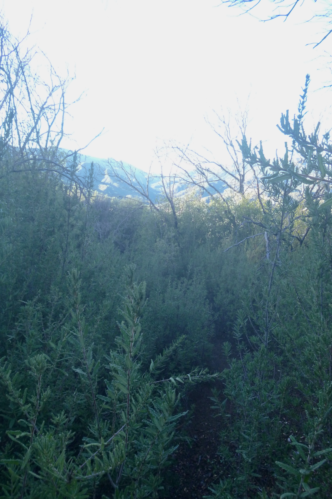
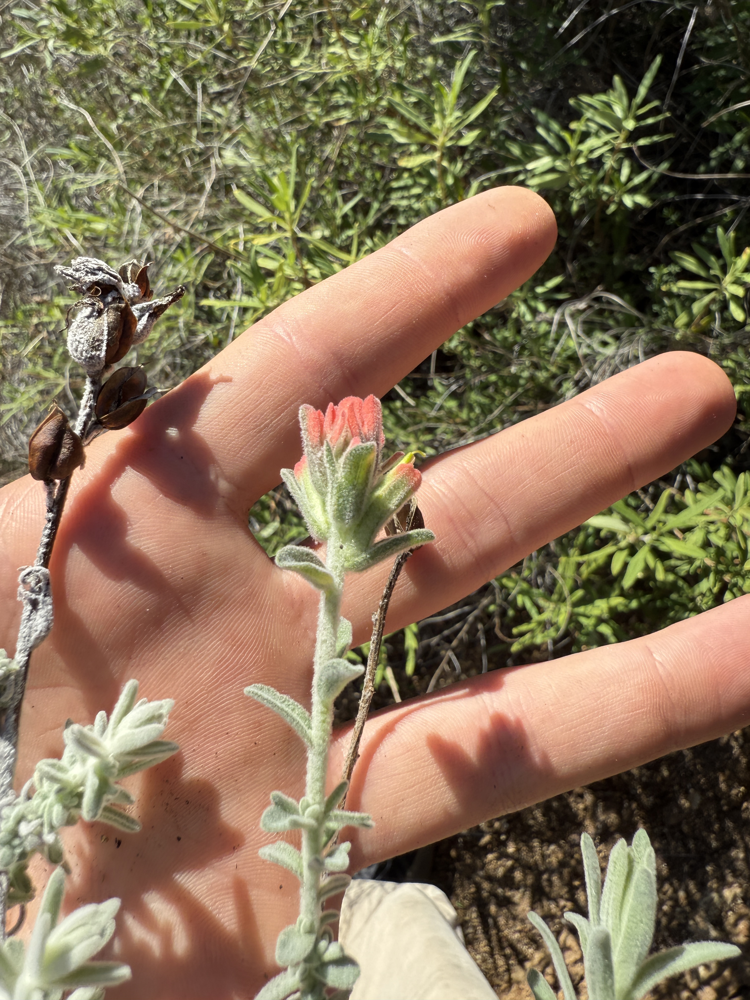
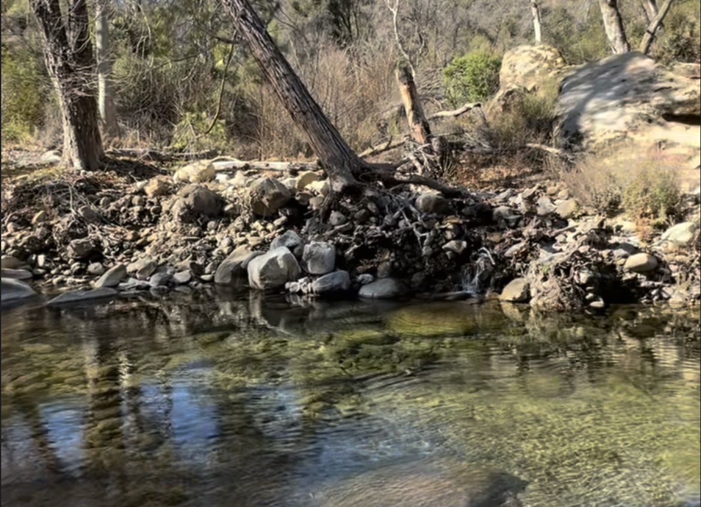

Arroyo Seco Overnighter January 2026
With an open weekend and an open weather window after a heavy month of rain on the central coast, I thought it would be a good time to hit the Big Sur interior. I rallied Chad, Ben, and Zach for an overnighter, and with Rainfall reaching around 35 inches for January alone, the flows were bound to be ripping. As of January 5th, the Arroyo Seco River was seeing flows of 1420 ft^3/s, and I was very keen to see what that looked like. After visiting our target area, the previous year and having nighttime temps hover in the low teens, I knew we would be in for a good one. The drive in was filled with some fun wildlife, notably a long-tailed weasel, a San Joaquin Kitfox, and some bobcats. Upon arriving in Indians around 10pm, temps were already at 28 degrees, and we all went to bed a bit fearful for the temps to come.
The next morning, we woke up around 5:45 but couldn’t bring ourselves to get going with temps hovering in the low 20s. We instead made coffee, ate breakfast, and hackey sacked until the sun came out for us. We set out at around 8:30 for what was bound to be a long day of bush whacking and high waters. Upon our descent into the Arroyo Seco River gorge, the flows made the task of crossing a bit interesting, but we scored with a freshly drowned tree, which we scooted across to safety.
The trail was in considerably worse condition than it had been the year prior, and we averaged about 1.5mph over 7~ hours of hiking and 3.7k of elevation. Due to the recent rain, many of the snags from the Dolan fire of 2020 had tipped over and blocked many sections of trail. This made for some slow going, and we tried our best to clear what we could. The fire succession had made some big leaps in the last 12 months, and we found ourselves in some pure stands of Wart Leaf Ceanothus (Ceanothus papillosus), which made for some of my favorite moments of the hike. The flowers and wildlife were also a highlight, some photos and videos of the standouts below.

A very cute Coast Horned Lizard (Phrynosoma coronatum)
A pure stand of Wart Leaf Ceanothus (Ceanothus papillosus)

Felt Castilleja (Castilleja foliolosa)


This beautiful pothole waterfall with a slight trickle in 2025 (left), and a ridiculous flow in 2026 (right).

Arroyo Seco River 2025 (left) and 2026 (right)
A fun addition to my kit this season has been this mini thermometer that records minimum and maximum temps over a 24-hour period. For 10 bucks it makes for some fun quantification of the previous night. Find it here. Lows reached 21 degrees in the valley, and the morning fire was absolutely necessary for drying off clothes and warming up. The hike back to the car was a bit faster, and we were on the road by 4pm. The trip totals were 17~ miles and 8k~ feet of elevation.

On our way out of Indians, we were surprised with the most epic Elk sighting I have had in the Los Padres to date. We saw around 30 females and a massive buck cross the road right around sunset, making for an incredible scene. Some photos below.